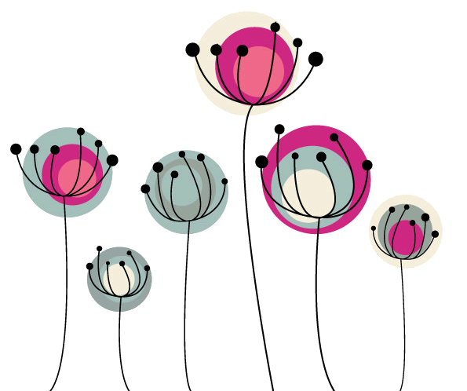

<!--<ion-list>
      <ion-list-header>Ionic</ion-list-header>
      <button ion-item (click)="close()">Learn Ionic</button>
      <button ion-item (click)="close()">Documentation</button>
      <button ion-item (click)="close()">Showcase</button>
      <button ion-item (click)="close()">GitHub Repo</button>
</ion-list>-->

<ion-list radio-group (ionChange)="changeFontFamily($event)" class="popover-page">
      <ion-row>
        <ion-list-header>
        Sort By
        </ion-list-header>
        <ion-col>
          <button ion-button (click)="sortByDate()">Today</button>
        </ion-col>
        <ion-col>
          <button ion-button (click)="sortByDateAll()" color="danger">All</button>
        </ion-col>
        <ion-col>
        <button ion-button color="secondary" >Date
          <ion-datetime displayFormat="YYYY-MM-DD" [(ngModel)]="myDate" (ionChange)="sortByDateSelect()">
          </ion-datetime>
        </button>
            
        </ion-col>
      </ion-row>
      

      <ion-row class="row-dots">
        <ion-col>
          <button ion-button="dot" (click)="changeBackgroundColor('white')" class="dot-white" [class.selected]="bgcolor==='white'"></button>
        </ion-col>
        <ion-col>
          <button ion-button="dot" (click)="changeBackgroundColor('tan')" class="dot-tan" [class.selected]="bgcolor==='tan'"></button>
        </ion-col>
        <ion-col>
          <button ion-button="dot" (click)="changeBackgroundColor('blue')" class="dot-blue" [class.selected]="bgcolor==='blue'"></button>
        </ion-col>
        <ion-col>
          <button ion-button="dot" (click)="changeBackgroundColor('gray')" class="dot-gray" [class.selected]="bgcolor==='gray'"></button>
        </ion-col>
      </ion-row>

      <ion-row>
        <ion-col col-3>
          <ion-item style="padding:0px">
            <ion-avatar (click)="changeBackground('../../assets/imgs/girl.png')">
              
            </ion-avatar>
          </ion-item>
        </ion-col>
        <ion-col col-3>
          <ion-item style="padding:0px">
            <ion-avatar (click)="changeBackground('../../assets/imgs/bear.png')">
              
            </ion-avatar>
          </ion-item>
        </ion-col>
        <ion-col col-3>
          <ion-item style="padding:0px">
            <ion-avatar (click)="changeBackground('../../assets/imgs/heart_rain.png')">
              
            </ion-avatar>
          </ion-item>
        </ion-col>
        <ion-col col-3>
          <ion-item style="padding:0px">
            <ion-avatar (click)="changeBackground('../../assets/imgs/flower.png')">
              
            </ion-avatar>
          </ion-item>
        </ion-col>
        <ion-col col-12>
          <ion-item>
            <ion-label>Default Background</ion-label>
            <ion-checkbox [(ngModel)]="default" (click)="changeBackground('../../assets/imgs/flower.png')"></ion-checkbox>
          </ion-item>
        </ion-col>
      </ion-row>
      
      <ion-list-header color="primary">
        Change font type to
      </ion-list-header>
      <ion-item>
        <ion-label>Default</ion-label>
        <ion-radio value="" [checked]="font===''"></ion-radio>
      </ion-item>
      <ion-item class="text-arial">
        <ion-label>Arial</ion-label>
        <ion-radio value="Arial" [checked]="font==='Arial'"></ion-radio>
      </ion-item>
      <ion-item class="text-calibri">
        <ion-label>Calibri</ion-label>
        <ion-radio value="Calibri" [checked]="font==='Calibri'"></ion-radio>
      </ion-item>
      <ion-item class="text-courier">
        <ion-label>Courier New</ion-label>
        <ion-radio value="Courier New" [checked]="font==='Courier New'"></ion-radio>
      </ion-item>
      <ion-item class="text-century">
        <ion-label>Century</ion-label>
        <ion-radio value="Century" [checked]="font==='Century'"></ion-radio>
      </ion-item>
      <ion-item class="text-lucida">
        <ion-label>Lucida Handwriting</ion-label>
        <ion-radio value="Lucida Handwriting" [checked]="font==='Lucida Handwriting'"></ion-radio>
      </ion-item>
      <ion-item class="text-times-new-roman">
        <ion-label>Times New Roman</ion-label>
        <ion-radio value="Times New Roman" [checked]="font==='Times New Roman'"></ion-radio>
      </ion-item>
    </ion-list>